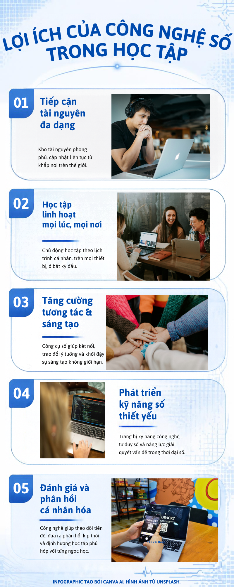

Infographic
Năm lợi ích chính của công nghệ số với người học: tiếp cận tài nguyên đa dạng, học linh hoạt mọi lúc mọi nơi, tăng tương tác và sáng tạo, phát triển kỹ năng số, và nhận phản hồi cá nhân hóa.

Infographic tạo bởi Canva AI, hình ảnh từ Unsplash.
Video giới thiệu
Video ngắn giới thiệu cách công nghệ số giúp việc học trở nên linh hoạt, hợp tác và sáng tạo hơn.
Video tạo bởi CapCut, tài liệu từ Pexels/FreeSound.